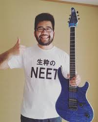

Music Career
Sithu Aye started playing guitar at age 12. He wrote and recorded his first album Cassini using software amp modelers and his laptop in his university's dormitory. Subsequently, many of his following releases were written and recorded while studying Physics at University of St Andrews, such as Invent the Universe, Isles EP and 26. Sithu wrote and produced his EP 26 over the course of four days to release it on June 26th, 2013, which marked his 23rd birthday as well as the day he graduated with a Master's degree in Physics.
After his graduation Sithu Aye worked as a Technology Consulting Analyst for Deloitte until 2016. In this time period he wrote and recorded Pulse, Senpai EP and Set Course for Andromeda. With the release of the latter he announced quitting his job and pursuing a full time career as a musician. A month after quitting his job, he went on a Japan tour with Protest the Hero.
During 2018, he took a break from touring to write his album Homebound, which was released on December 17 of the same year and was made available at the start of december to his supporters on patreon. In 2019 he headlined a tour in the UK in support of his album Homebound and toured Europe supporting Intervals. He also worked on a follow up to his Senpai EP series, which he announced to be more of a full-length album this time and accompanied by a Visual Novel themed digital story booklet.
Musical Style
Sithu Aye's music can be described as instrumental progressive metal that is focused on lead guitar,influenced by prominent artists of the early djent scene, such as Periphery and Animals as Leaders. He describes his style as 'happy progressive metal'. His two Senpai EPs are also influenced by Japanese anime music and artwork.
Gear
Sithu is a Mayones artist, using their Regius, Setius and Duvell guitar models. He also is a D'Addario artist, using their NYXL strings and Dunlop artist, having used Jazz III XL guitar picks and is currently using Dunlop Flow picks.